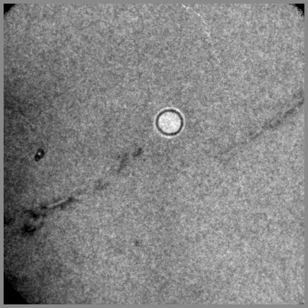
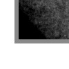

| .OPERATION: | WI B | ; Window Image/Volume |
| .INPUT FILE: | sav_pp_big | ; File name (input) |
| .OUTPUT FILE: | wib | ; File name (output) |
| .DIMENSIONS: | 100, 100 | ; Size of window |
| .TOP LEFT COORDINATES: | -20, 450 | ; Location of left corner |
| .BACKGROUND: | 255 | ; Location of left corner |
| INPUT | OUTPUT |
|---|---|
|  |  |
| sav_pp_big | wib |